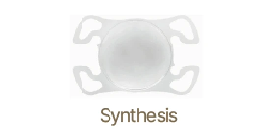
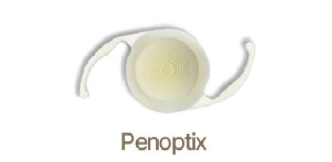
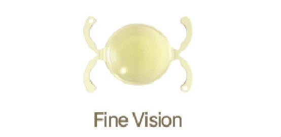
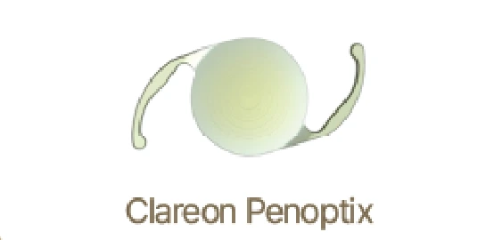
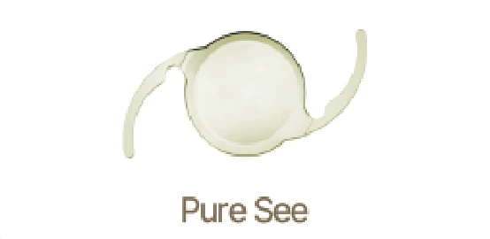
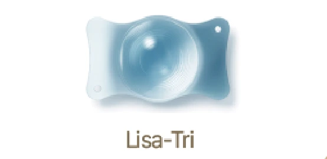

INTRAOCULAR LENS
나의 일상을 담은,
인공수정체 선택.
가까운 글씨부터 멀리 펼쳐진 풍경까지.
눈의 상태와 자주 보는 거리를 함께 생각합니다.
A SMALL LENS, AN EVERYDAY CHOICE
혼탁한 수정체를 대신하는
작은 렌즈입니다.
백내장 수술은 혼탁해진 수정체를 제거하고 그 자리에 인공수정체를 삽입하는 치료입니다. 렌즈마다 초점을 맞추는 거리와 특성이 다르므로, 검사 결과와 생활 방식을 함께 고려해 선택합니다.
01 · COMPARE THE FOCUS
초점을 맞추는 방식,
어떤 차이가 있을까요?
01 / MONOFOCAL
단초점
한 초점 거리를 중심으로
- 초점
- 원거리 또는 근거리 중 한 지점
- 생활 속 고려
- 초점을 맞춘 거리와 다른 거리를 볼 때 안경이 필요할 수 있습니다.
02 / MULTIFOCAL
다초점
여러 생활 거리를 함께
- 초점
- 원거리·중간거리·근거리 등 여러 거리
- 생활 속 고려
- 여러 거리의 시생활과 눈 상태를 함께 살펴 적합성을 상담합니다.
렌즈의 적합성과 수술 후 안경 사용 여부는 개인의 눈 상태에 따라 다릅니다.
02 · YOUR EVERYDAY DISTANCES
하루 중, 어떤 거리를
가장 자주 보시나요?
책과 휴대폰을 보는 가까운 거리
취미와 일상에서 사용하는 중간 거리
멀리 펼쳐진 풍경을 보는 원거리
03 · LENS COLLECTION
눈의 상태에 맞는 렌즈를
함께 살펴봅니다.
제품별 특징과 사용 가능 여부는 진료 시 상담해주세요.

Synthesis
신테시스

PanOptix
팬옵틱스

FineVision
파인비전

Clareon PanOptix
클라레온 팬옵틱스

PureSee
퓨어씨

Lisa-Tri
리사트리
LET’S FIND YOUR FOCUS
내 눈에 맞는 선택,
상담에서 시작하세요.
눈의 상태와 자주 하는 활동, 안경 사용에 대한 선호를 알려주세요.
검사와 치료 방법은 개인의 눈 상태에 따라 달라집니다.